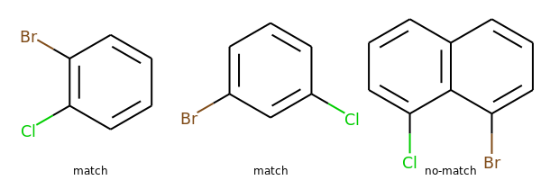
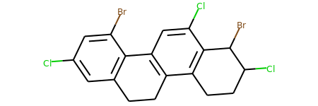
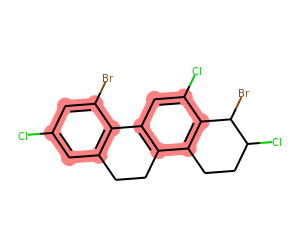
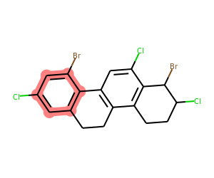
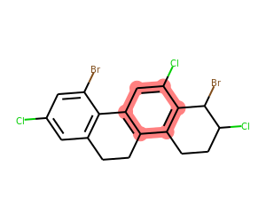
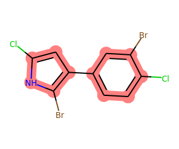
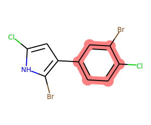

from rdkit import Chem
from rdkit.Chem import Draw
from rdkit.Chem.Draw import IPythonConsole
import rdkit
print(rdkit.__version__)2019.09.3RDKit WARNING: [05:43:19] Enabling RDKit 2019.09.3 jupyter extensionsThis is one that came up recently on the mailing list that I thought made for a good example to demonstrate how to write Python to do some more advanced structural searches with the RDKit.
from rdkit import Chem
from rdkit.Chem import Draw
from rdkit.Chem.Draw import IPythonConsole
import rdkit
print(rdkit.__version__)2019.09.3RDKit WARNING: [05:43:19] Enabling RDKit 2019.09.3 jupyter extensionsMy paraphrasing of the problem: Alexis wanted to be able to do the equivalent of a substructure search that finds all aromatic rings that have both Cl and Br substituents. So he wanted to be able to match the first two of these, but not the second:
ms = [Chem.MolFromSmiles(x) for x in 'Clc1c(Br)cccc1 Clc1cc(Br)ccc1 Clc1cccc2c1c(Br)ccc2'.split()]
Draw.MolsToGridImage(ms,legends='match match no-match'.split())
It’s really non-trivial to do this with SMARTS since it has no way to express that two atoms should be in the same ring without making the ring explicit in the SMARTS. I was able to come up with this SMARTS, which works, but is unwieldy (at best):
p = Chem.MolFromSmarts('Cl[c;$(c1(Cl)c(Br)cccc1),$(c1(Cl)cc(Br)ccc1),$(c1(Cl)ccc(Br)cc1)]')
print([m.HasSubstructMatch(p) for m in ms])[True, True, False]So that does what we want, but it only handles six rings where every atom is a C. That second part is easy enough to change in the SMARTS, but handling other ring sizes starts to make the SMARTS really long.
A more difficult problem is that, because we use recursive SMARTS, we can’t get the atoms matching the query. The pattern I used above would only return the Cl atom and the C atom it’s connected to. I’m not sure Alexis even wanted to do that, but by this point I was interested in the problem and decided to write some Python to solve the problem flexibly.
Here we go.
Before introducing the code and showing what it can do, a quick intro on the two pieces of functionality I’m going to be using from Python’s itertools module. These are really useful.
Let’s start with using itertools to flatten a sequence of sequences:
import itertools
seqs = [[1,2,3],['a','b'],[10,20]]
list(itertools.chain.from_iterable(seqs))[1, 2, 3, 'a', 'b', 10, 20]And to generate all the permutations of combinations of those sequences:
list(itertools.product(*seqs))[(1, 'a', 10),
(1, 'a', 20),
(1, 'b', 10),
(1, 'b', 20),
(2, 'a', 10),
(2, 'a', 20),
(2, 'b', 10),
(2, 'b', 20),
(3, 'a', 10),
(3, 'a', 20),
(3, 'b', 10),
(3, 'b', 20)]Ok, that’s the background, let’s define the functions we’ll use:
import itertools
def getAromaticRings(mol):
""" generator returning all aromatic rings (=only aromatic bonds) in a molecule
Parameters
----------
mol : Mol
Yields
------
set
IDs of the atoms in an aromatic ring
"""
ri = mol.GetRingInfo()
for ring in ri.BondRings():
ats = set()
isArom = True
for bi in ring:
bnd = mol.GetBondWithIdx(bi)
if not bnd.GetIsAromatic():
isArom = False
break
ats.add(bnd.GetBeginAtomIdx())
ats.add(bnd.GetEndAtomIdx())
if isArom:
yield ats
def getSharedRings(mol,queries,rings=None,excludeQueries=None):
""" generator returning all rings that contain all the atoms defined in queries
the first atom matching each query should be in the ring
Parameters
----------
mol : Mol
queries : sequence of Mols
rings : list/tuple/set of list/tuple/sets, optional
sequence of rings defined by sequences of atom ids
If this isn't provided, all of the molecule's rings will be used
excludeQueries : sequence of Mols, optional
any ring containing an atom matching the first atom in any of these queries
will be excluded
Yields
-------
set
containing atom IDs for a matching ring
"""
if rings is None:
rings = mol.GetRingInfo().AtomRings()
alreadySeen = []
rings = [set(x) for x in rings]
matchSets = [[x[0] for x in mol.GetSubstructMatches(q)] for q in queries]
if excludeQueries is not None:
exclude = [[x[0] for x in mol.GetSubstructMatches(q)] for q in excludeQueries]
# flatten the lists of matches into a set:
exclude = set(itertools.chain.from_iterable(exclude))
else:
exclude = set()
for combo in itertools.product(*matchSets):
scombo = set(combo)
if len(scombo) < len(combo):
# degenerate:
continue
for ring in rings:
if ring in alreadySeen:
continue
if scombo.issubset(ring) and exclude.isdisjoint(ring):
alreadySeen.append(ring)
yield ring
def drawMolWithRings(mol,rings):
""" draws a molecule with a set of rings highlighted
Parameters
----------
mol : Mol
rings : list/tuple/set of list/tuple/sets
sequence of rings defined by sequences of atom IDs
Returns
-------
Image
"""
bondsToHighlight=[]
for bnd in mol.GetBonds():
keep = False
ats = set([bnd.GetBeginAtomIdx(),bnd.GetEndAtomIdx()])
for ring in rings:
if ats.issubset(ring):
keep = True
break
if keep:
bondsToHighlight.append(bnd.GetIdx())
highlightAtoms = list(itertools.chain.from_iterable(rings))
tmol = Draw.PrepareMolForDrawing(mol)
d2d = Draw.MolDraw2DCairo(300, 250)
d2d.DrawMolecule(tmol, highlightAtoms=highlightAtoms,
highlightBonds = bondsToHighlight)
d2d.FinishDrawing()
return Draw._drawerToImage(d2d)This is the molecule we’ll work with:
mol = Chem.MolFromSmiles('c1c(Cl)cc(Br)c2c1CCc3c2cc(Cl)c4c3CCC(Cl)C4Br')
mol
Show what the getAromaticRings() function returns here:
rings = list(getAromaticRings(mol))
rings[{0, 1, 3, 4, 6, 7}, {10, 11, 12, 13, 15, 16}]We can use drawMolWithRings() to highlight those atoms:
drawMolWithRings(mol,rings)
Now let’s look at Alexis’ question: find all the aromatic rings that have a Cl and a Br attached:
matches = list(getSharedRings(mol,[Chem.MolFromSmarts(sma) for sma in ('[a]-Cl','[a]-Br')],
rings=getAromaticRings(mol)))
print(matches)
drawMolWithRings(mol,matches)[{0, 1, 3, 4, 6, 7}]
What about aromatic rings that have both a Cl and an aliphatic C attached?
matches = list(getSharedRings(mol,[Chem.MolFromSmarts(sma) for sma in ('[a]-Cl','[a]-C')],
rings=getAromaticRings(mol)))
print(matches)
drawMolWithRings(mol,matches)[{0, 1, 3, 4, 6, 7}, {16, 10, 11, 12, 13, 15}]
What about just finding any rings (not just aromatic) that have both Cl and Br connected?
Here we just drop the rings argument to getSharedRings(), it will use all of the molecule’s rings:
matches = list(getSharedRings(mol,[Chem.MolFromSmarts(sma) for sma in ('[*]-Cl','[*]-Br')]))
print(matches)
drawMolWithRings(mol,matches)[{0, 1, 3, 4, 6, 7}, {15, 16, 17, 18, 19, 21}]
We can also find any rings that have a Cl, but not a Br:
matches = list(getSharedRings(mol,[Chem.MolFromSmarts(sma) for sma in ('[*]-Cl',)],
excludeQueries=[Chem.MolFromSmarts(sma) for sma in ('[*]-Br',)]))
print(matches)
drawMolWithRings(mol,matches)[{10, 11, 12, 13, 15, 16}]
We aren’t limited to just six membered rings, of course. Go back to the original query for aromatic rings with both Cl and Br attached:
mol = Chem.MolFromSmiles('Clc1[nH]c(Br)c(c2ccc(Cl)c(Br)c2)c1')
matches = list(getSharedRings(mol,[Chem.MolFromSmarts(sma) for sma in ('[*]-Cl','[*]-Br')],
rings=getAromaticRings(mol)))
print(matches)
drawMolWithRings(mol,matches)[{1, 2, 3, 5, 14}, {6, 7, 8, 9, 11, 13}]
What about aromatic rings that have both Cl and Br attached, but that don’t contain a heteroatom?
mol = Chem.MolFromSmiles('Clc1[nH]c(Br)c(c2ccc(Cl)c(Br)c2)c1')
matches = list(getSharedRings(mol,[Chem.MolFromSmarts(sma) for sma in ('[*]-Cl','[*]-Br')],
rings=getAromaticRings(mol),
excludeQueries=[Chem.MolFromSmarts(sma) for sma in ('[a;!#6]',)]))
print(matches)
drawMolWithRings(mol,matches)[{6, 7, 8, 9, 11, 13}]
Hopefully there’s some useful stuff in here for you!